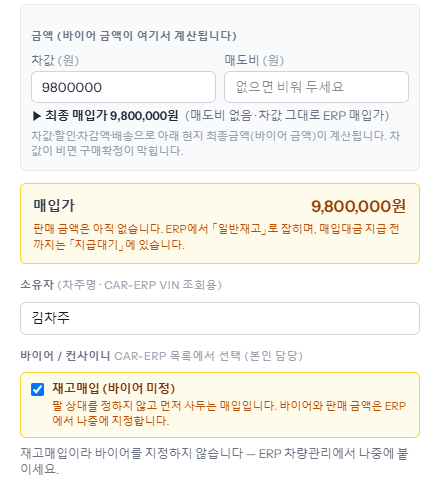
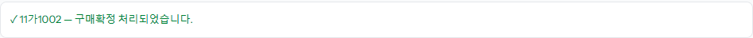
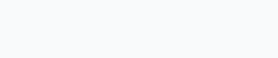

차값이 좋아 바이어가 정해지기 전에 먼저 사 두는 경우입니다. 「경매/구매」 구매확정 창에서 「재고매입 (바이어 미정)」에 체크하고 확정하면, 바이어·판매 금액 없이 ERP 재고로 넘어갑니다. 바이어는 나중에 ERP 에서 붙입니다.
「바이어 / 컨사이니」 바로 아래 노란 칸입니다. 체크하면 바이어 선택 칸과 판매 쪽 금액 칸(총판매가·운임비·환율)이 사라지고, 위쪽에 「매입가」만 남습니다. 차값과 매도비, 딜러 서류·입금정보는 평소처럼 넣습니다. 첨부가 없으면 확정이 되지 않는 것도 같습니다.

「구매확정 처리되었습니다」와 「car-erp 전송 완료」가 뜹니다. ERP 에서는 매입대금을 지급하기 전까지 「지급대기」에, 지급한 뒤에는 「일반재고」에 보입니다. 바이어가 정해지면 ERP 차량 화면에서 바이어와 판매 금액을 넣습니다 — 그때부터 「선적전」으로 옮겨 갑니다.

